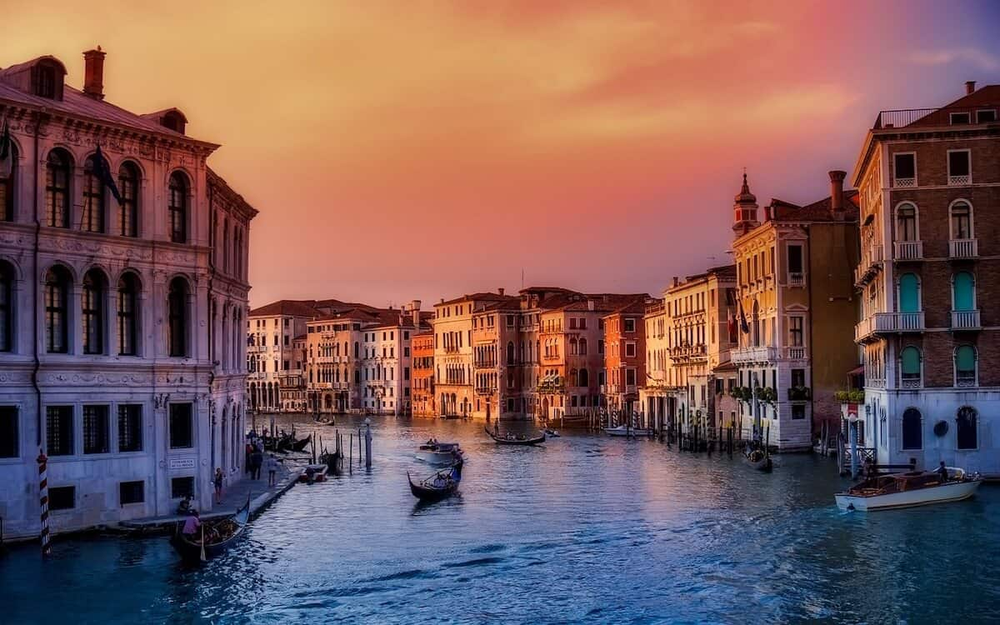
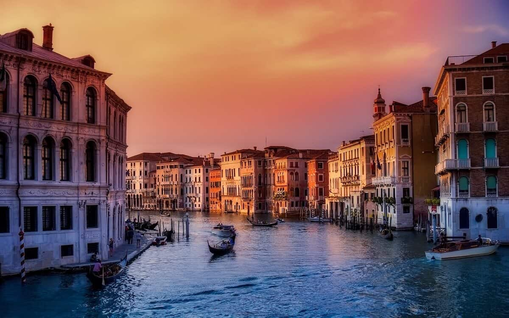

Vai domājat ceļot uz Itāliju? Cik skaista valsts! Tā kā ir tik daudz skaistu pilsētu, tiešām ir grūti organizēt maršrutu, lai nekas nepaliktu neredzēts... Par laimi, varat pierakstīt mūsu šodienas rakstu par skaistākās pilsētas Itālijā un ņemt tos vērā.
Itāļu virtuve, tāpat kā valoda, ir neatkārtojama un ārkārtīgi vilinoša. Ne velti tā visā pasaulē ir iekarojusi nepārprotamu vietu cilvēku ēdienkartē un arī sirdīs. Protams, pica ir pasaulē populārākais itāļu ēdiens, taču - Itālijā ir vēl daudz citu, tāpēc apskatījām kas vēl ir lietas, kas noteikti ir jānomēģina dzīvē.
Itāļu ēdienus varētu dēvēt par vieniem no populārākajiem pasaulē. Itālijas virtuve ir attīstījusies gadsimtu garumā, tās saknes meklējamas jau 4. gadsimtā pirms Kristus dzimšanas, lai gan Itālija kā valsts ir zināma vien kopš 19. gadsimta. Ierastie un populārākie ēdieni ir gardi un pārsvarā arī vienkārši, bieži vien to pamatā ir tikai divas līdz četras galvenās sastāvdaļas.
 
